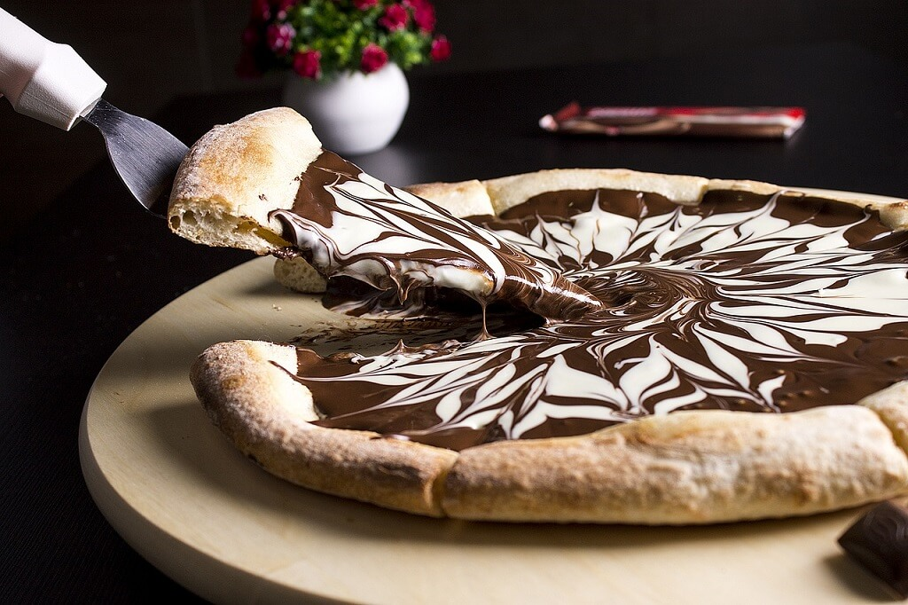
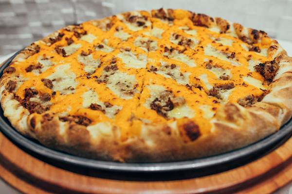
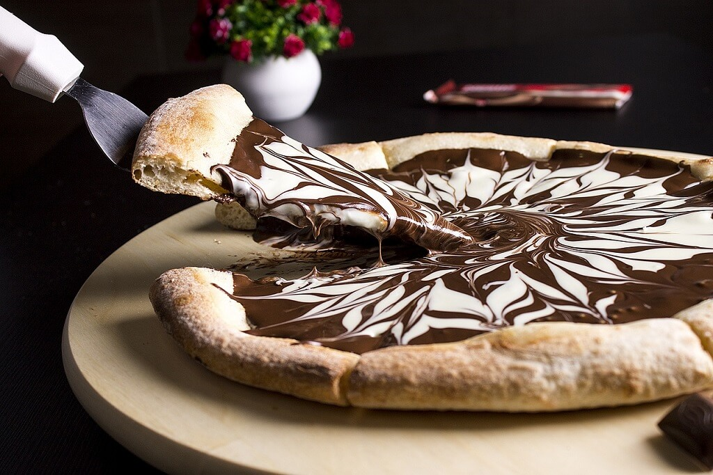
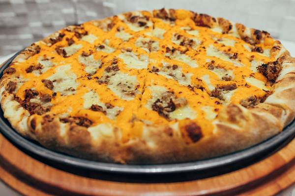
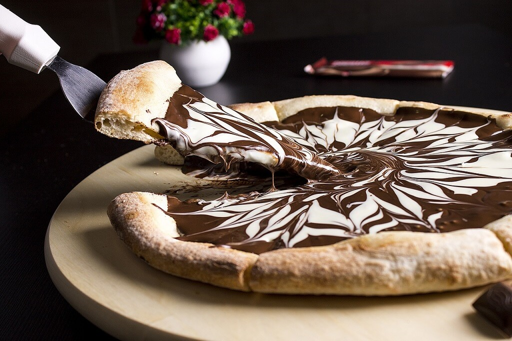
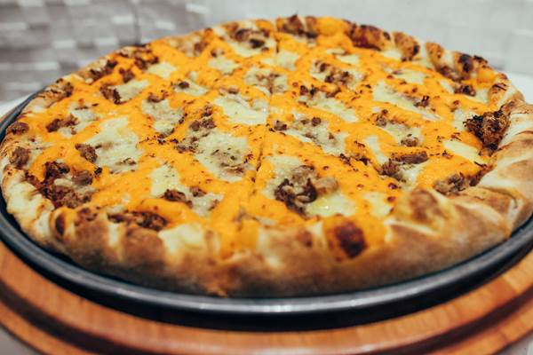
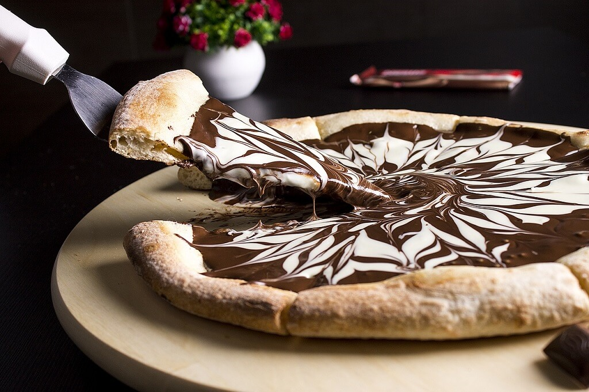
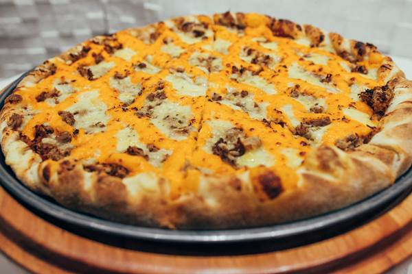

Sensação, chocolate ao leite com morango.
Dois Amores, chocolate ao leite e chocolate branco.
Prestígio, chocolate ao leite com coco.
Sedução, chocolate branco com morango
Calabresa
Strogonof (frango e carne)
Peperoni
Lombo com catupiry
Frango com catupiry
Bacon
Quatro queijos
Broto (4 fatias)
Pequena (8 fatias)
Média (12 fatias)
Grande (16 fatias)
Extra grande (22 fatias)
Chopp
Sucos Naturais
Refrigerantes diversos
 






